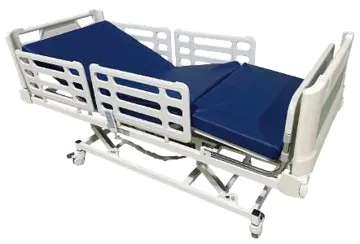
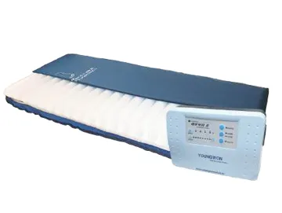
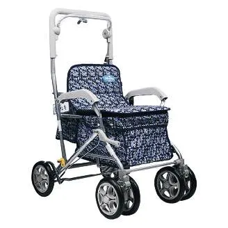
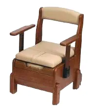
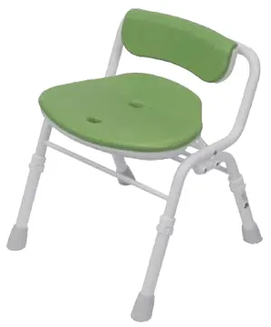
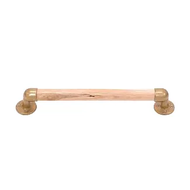

선생님이 수급자 댁에서 바로 쓰는 무료 도우미를 드려요.
상태만 고르면 필요한 용품과 본인부담금이 1분 만에 나옵니다.
선생님 전용 도우미로 할 수 있는 일
걷기·일어서기·피부·소변 상태를 고르면 필요한 용품 Top 5를 이유와 함께 보여드려요.
현관·침실·욕실 13개 항목 체크로 위험도와 우선 준비할 용품을 알려드려요.
"양말은 1년에 몇 켤레?" 품목별 내구연한·수량 한도와 본인부담률을 한 표로.
상담 결과를 버튼 한 번으로 보호자에게 전송. 가족이 같은 화면으로 확인해요.






제품 선택부터 배송·설치까지 해피케어복지용구가 함께합니다.
※ 등급 모의 계산·추천 결과는 참고용이며, 장기요양등급은 국민건강보험공단의 판정으로 결정됩니다. 내구연한·급여한도는 카탈로그 기준으로 보건복지부 고시에 따라 달라질 수 있습니다.